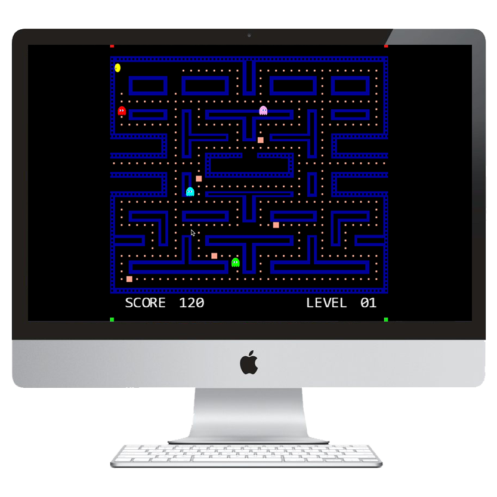
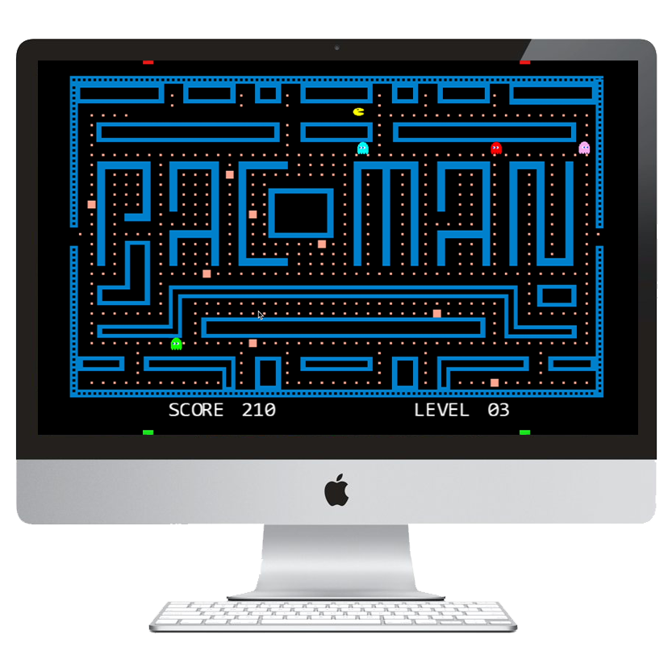

Projects
Breakthrough Maths Website
As the lead designer for rebranding the Breakthrough Maths website,
I focused on creating a more sophisticated and user-friendly digital experience.
The primary objectives were to elevate the site's visual appeal, while ensuring
it retained a welcoming atmosphere for both students and parents.
I collaborated closely with the CEO to identify key content areas that were
essential for our target audience. My approach involved thoughtful organization
and prioritization of information to avoid overwhelming users. The navigation
bar was designed to prominently feature critical pages, whereas the footer
included less frequently accessed pages. This strategic layout enhanced usability
and ensured that essential information was readily accessible.
To maintain a cohesive visual identity, I implemented a consistent color scheme
and design elements across all pages. I also integrated relevant reviews
throughout the site, reinforcing the effectiveness of our services and building
trust with potential clients.
For a more indepth look, watch here.
Trivia Game
In collaboration with Qualcomm and a team of fellow students, we developed a WebGL
PacMan game for my Software Engineering module. I led the project as Team Leader,
coordinating meetings, delegating responsibilities, tracking progress, and assisting
team members as needed.
While I focused less on design in this project, I played a key role in managing both
the frontend and backend teams to ensure smooth execution. Our goal was to modernize
the nostalgia of the classic PacMan by incorporating dynamically switchable mazes
without the need to level up.
This project significantly enhanced my leadership and organizational skills,
as I worked closely with the client, the module demonstrator, and our team to ensure
all requirements were met. Our efforts were recognized, and we were chosen among the
top 10 of 31 teams, praised for our effective team structure and overall development skills.
For a walkthrough of the game, watch here.
PacMan



As the lead designer for rebranding the Breakthrough Maths website,
I focused on creating a more sophisticated and user-friendly digital experience.
The primary objectives were to elevate the site's visual appeal, while ensuring
it retained a welcoming atmosphere for both students and parents.
I collaborated closely with the CEO to identify key content areas that were
essential for our target audience. My approach involved thoughtful organization
and prioritization of information to avoid overwhelming users. The navigation
bar was designed to prominently feature critical pages, whereas the footer
included less frequently accessed pages. This strategic layout enhanced usability
and ensured that essential information was readily accessible.
To maintain a cohesive visual identity, I implemented a consistent color scheme
and design elements across all pages. I also integrated relevant reviews
throughout the site, reinforcing the effectiveness of our services and building
trust with potential clients.
For a walkthrough of the game, watch here.